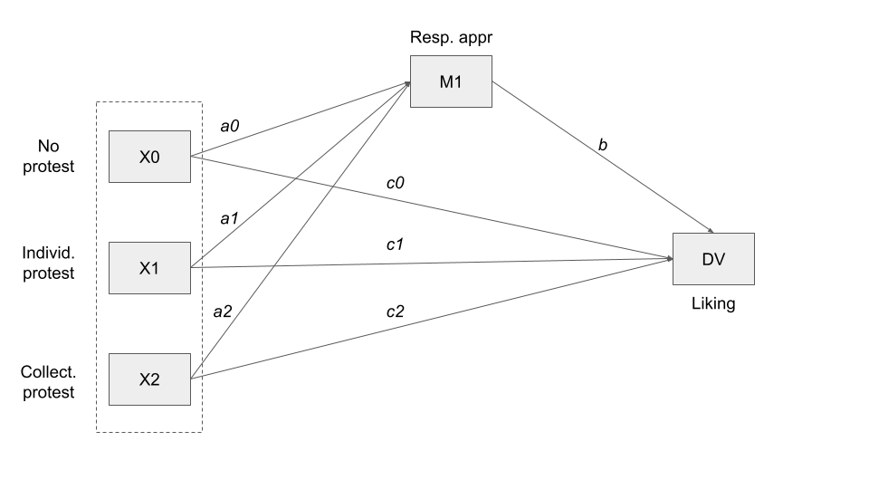

Mediation
Learning goals
- What is the Simple Mediation Model
- How to estimate a Simple Mediation Model using the PROGRESS software (in R)
- How to interpret the output of the estimation of the Simple Mediation Model using the PROGRESS software
In this unit we’ll learn the elements of mediation analysis, with a focus on the most basic (but also popular) mediation model possible consisting of a causal antecedent variable linked to a single consequent variable through a single intermediary variable or mediator. This is a popular simple mediation model.
Download and load the PROCESS software
- Download from Moodle (folder “Scripts”) the PROCESS software for R. The software is written by the author of the book we are using during this course, Andrew F. Hayes. The software is also available on https://www.PROCESSmacro.org/download.html, where you can find the version for R and other statistical software. In this course we’ll use the R version (several examples in the book are from the SPSS version).
- Create a folder “PROCESS_R” in your R project directory, and save the “PROCESS.R” there
- Run the code below to load the
processfunctions
source("PROCESS_R/PROCESS.R")
********************* PROCESS for R Version 4.0.1 *********************
Written by Andrew F. Hayes, Ph.D. www.afhayes.com
Documentation available in Hayes (2022). www.guilford.com/p/hayes3
***********************************************************************
PROCESS is now ready for use.
Copyright 2021 by Andrew F. Hayes ALL RIGHTS RESERVED
Download and load the data set
- Download the
pmidataset and save it in your “data” folder, in the R project directory. - Load the data by using the
read.csvfunction.
pmi_data <- read.csv("data/pmi.csv")Case study description
Participants read a news story describing global economic conditions leading to a possible sugar shortage and an increase in price.
Researchers told them that the story is about to be published:
- on the front page of a newspaper (= front-page condition (cond = 0))
- or in the inside of an economic supplement (= back page condition (cond = 1)).
This is the independent variable (\(X\)), and is a dichotomous variable (in this case it expresses an experimentally manipulated condition, but a variable can be used in a mediation model even when in non-experimental studies).
Participants then answered a series of questions:
- about their intention to buy sugar (DV = reported reaction (reaction))
- and aimed to assess (1) their perception of media’s influence on the general public’s intention to buy sugar (= presumed media influence (pmi)), and (2) how important the topic was to the global economic crisis (=perceived importance of the topic (import)).
Research question: does the location of the article affect behavioral intentions indirectly through presumed media influence?
The question is about a mechanism at work that leads to different behavioral intentions after being told about the different locations of the article. The appropriate statistical model is a mediated model. This is the kind of model we use to answer questions about mechanisms.
The simple mediation model
Estimating a mediation model implies finding three different coefficients (a, b, and c’), and three derived “effects” (total, indirect, direct), by fitting three different regression models.

- The total effect “c” is just the coefficient (c) we would find by fitting a simple regression model (i.e. \(Y = i + cX\))
- The indirect effect (ab) is the effect of \(X\) on \(Y\), through the mediator \(M\). It’s obtained by multiplying \(a * b\)
- The direct effect (c’)is the partial effect of \(X\) on \(Y\) after controlling for \(M\).
In practice, a simple mediation model decompose the total effect of X on Y, in a direct and indirect effect
When Y and M are estimated using OLS regression, meaning analyzed as continuous variables using the OLS criterion for maximizing fit of the model (or when using a maximum-likelihood-based model of continuous outcomes, another method in place of the OLS):
TOTAL EFFECT = DIRECT EFFECT + INDIRECT EFFECT \[c = ab + c'\]
This simple equation does not apply when using other modeling methods that deviate from what is known in the generalized linear modeling literature as an “identity link” in the model.
The three regression model part of the Simple Mediation Models are:
\[0) \hat Y = i_1 + c_X\] \[1) \hat M = i_2 + a_X\] \[2) \hat Y = i_3 + c'_X + bM\]
Estimation with PROCESS
Using OLS regression, we use the process function to estimate equations 1 and 2 (in the previous slide) and thereby to get a, b, and c′ along with standard regression statistics such as R2 for each of the equations. It also creates a section of output containing the direct and indirect effects of \(X\).
The function requires you to specify:
- the dataset
- the dependent variable \(y\)
- the independent variable \(x\)
- and the mediator variable \(m\)
Moreover, we specify:
- the total parameter, which we set to 1 (total = 1). It is used to tell the software to generate the total effect of X on Y (which we called c in the previous slides).
- model=4, a parameter used for mediation models
- We also use a seed with an aribitrary number. This is used to ensure replicability of the results, since the model estimation involves a procedure using random number generation (the seed ensures that the randomly generated sequences are the same if you repeat the estimation).
process(pmi_data, y = "reaction", x = "cond", m = "pmi",
total = 1, normal = 1, model = 4, progress=0,
seed=31216)
********************* PROCESS for R Version 4.0.1 *********************
Written by Andrew F. Hayes, Ph.D. www.afhayes.com
Documentation available in Hayes (2022). www.guilford.com/p/hayes3
***********************************************************************
Model : 4
Y : reaction
X : cond
M : pmi
Sample size: 123
Custom seed: 31216
***********************************************************************
Outcome Variable: pmi
Model Summary:
R R-sq MSE F df1 df2 p
0.1808 0.0327 1.7026 4.0878 1.0000 121.0000 0.0454
Model:
coeff se t p LLCI ULCI
constant 5.3769 0.1618 33.2222 0.0000 5.0565 5.6973
cond 0.4765 0.2357 2.0218 0.0454 0.0099 0.9431
***********************************************************************
Outcome Variable: reaction
Model Summary:
R R-sq MSE F df1 df2 p
0.4538 0.2059 1.9404 15.5571 2.0000 120.0000 0.0000
Model:
coeff se t p LLCI ULCI
constant 0.5269 0.5497 0.9585 0.3397 -0.5615 1.6152
cond 0.2544 0.2558 0.9943 0.3221 -0.2522 0.7609
pmi 0.5064 0.0970 5.2185 0.0000 0.3143 0.6986
************************ TOTAL EFFECT MODEL ***************************
Outcome Variable: reaction
Model Summary:
R R-sq MSE F df1 df2 p
0.1603 0.0257 2.3610 3.1897 1.0000 121.0000 0.0766
Model:
coeff se t p LLCI ULCI
constant 3.2500 0.1906 17.0525 0.0000 2.8727 3.6273
cond 0.4957 0.2775 1.7860 0.0766 -0.0538 1.0452
***********************************************************************
Bootstrapping in progress. Please wait.
************ TOTAL, DIRECT, AND INDIRECT EFFECTS OF X ON Y ************
Total effect of X on Y:
effect se t p LLCI ULCI
0.4957 0.2775 1.7860 0.0766 -0.0538 1.0452
Direct effect of X on Y:
effect se t p LLCI ULCI
0.2544 0.2558 0.9943 0.3221 -0.2522 0.7609
Indirect effect(s) of X on Y:
Effect BootSE BootLLCI BootULCI
pmi 0.2413 0.1322 0.0143 0.5254
Normal theory test for indirect effect(s):
Effect se Z p
pmi 0.2413 0.1300 1.8559 0.0635
******************** ANALYSIS NOTES AND ERRORS ************************
Level of confidence for all confidence intervals in output: 95
Number of bootstraps for percentile bootstrap confidence intervals: 5000Interpretation of coefficients
Two people who differ by one unit in X (front-page condition vs. back-page condition) are estimated to be differ by 0.4957 units (95% CI [0.0538, 1.0452]) on average in their intention to buy sugar (total effect).
They differ by 0.2413 units (95% CI [0.0143, 0.5254]) on average as a result of the indirect effect of page manipulation on buying intention through presumed media influence. The rest of the difference, 0.2544 units (95% CI [-0.2522, 0.7609]), is the direct effect of page manipulation on reported reactions, which is independent of the effects of page manipulation on reaction through PMI.
Inference
When coming to statistical inference, and thus to the “statistical significance” of the coefficients, the output reports p-values and confidence intervals.
Inferential methods have different characteristics for the direct effect and the indirect effect: Inference for the direct effect (and the total effect) is simple and non-controversial, while the case of indirect effect is more complex.
Regarding the direct effect, the inference can be framed in terms of a p-value (through hypothesis testing) or confidence interval.
In the example above, the direct effect of the experimental condition, independent from the mediator, amounts to 0.2544 units (95% CI [-0.2522, 0.7609], p-value: 0.3221).
The p-value and the confidence interval show that the effect is not statistically significant: the p-value is above the standard threshold of 0.05, while the confidence interval includes zero (when it does so, it means that it is possible that it is equal to zero).
Regarding the indirect effect, there are two possibilities:
- calculating the p-value through a hypothesis test, relying the assumption of normality of the sampling distribution
- Using a particular technique called bootstrapping
In the bottom part of the output of PROCESS, are both the “indirect effect(s) of X on Y”, in the confidence interval form, and the “normal theory test for indirect effect(s)”, in the p-value form.
Based on statistical research, the recommendation of the PROCESS software is, in general, to avoid the “normal theory test for indirect effect(s)” approach, and to interpret the confidence interval. This approach would be better in several empirical circumstances, and more powerful in detecting statistical significance.
We can avoid calculating the normal theory test by removing normal = 1 from the function process.
For instance, in the example, the p-value of the indirect effect is not statistically significant (p-value = 0.0635, > 0.05), while the bootstrapping confidence interval is statistically significant (it does not include zero: 95% CI [0.0143, 0.5254]).
We already saw that confidence intervals can be calculated through standard errors based on the Central Limit Theorem, and thus based on theoretical assumptions regarding the sampling distribution.
In this case, instead, they are calculated through bootstrapping. It is a procedure based on resampling with replacement. Also in this case, it is of fundamental importance that the sample is a miniature representation of the original population.
Resampling with replacement is a resampling method that create new samples by choosing, in a random way, the cases that compose an initial sample. The particularity is that the same case can be chosen more than once: “Suppose case 1 in the original sample is”Joe.” Joe happened to be contacted for participation in the study and provided data to the effort. In the resampling PROCESS, Joe functions as a stand-in for himself and anyone else like him in the pool of potential research participants, as defined by Joe’s measurements on the variables in the model. The original sampling could have sampled several Joes or none, depending in part on the luck of the draw”.
In bootstrapping, a large number of samples are drawn from the sample (e.g. 5,000 is the default in PROCESS. Also 10,000 is commonly used), using the just mentioned random sampling with replacement.
Next, the indirect effect (the statistic of interest in this case) is calculated based on each sample.
Finally, the confidence intervals are found by dividing the distribution in 100 parts (percentiles), and taking the value corresponding to the 2.5 percentile (lower boundary of the 95% confidence interval), and the 97.5 percentile (upper boundary of the 95% confidence interval).
A difference between confidence intervals calculated using standard errors (relying on the “theoretical” sampling distribution), and those calculated through bootstrapping, is that the former is always symmetrical (the upper and lower bound of the confidence interval are equidistant from the point estimate), while the latter can be asymmetrical, depending on the shape of the distribution.
Bootstrapping is particularly useful relative to the normal theory approach in smaller samples, because it is in smaller samples that the non-normality of the sampling distribution of ab is likely to be most severe, the large sample asymptotic of the normal theory approach are harder to trust, and the power advantages of bootstrapping are more pronounced.
Example with continuous X
In the previous example the independent variable (\(X\)), was a dichotomous variable. In this case it expressed an experimentally manipulated condition, but a variable can be used in a mediation model even when in non-experimental studies.
In other case, the independent variable can be continuous. No modifications are necessary to the mathematics or procedures described to estimate these effects, and the interpretation of these effects otherwise remains unchanged.
Download the estress data from Moodle, save the file into your “data” folder and load it.
estress <- read.csv("data/estress.csv")The dataset includes information on 262 entrepreneurs who responded to an online survey about recent performance of their business as well as their emotional and cognitive reactions to the economic climate.
Researchers proposed that economic stress (\(X\), variable estress) leads to a desire to disengage from entrepreneurial activities (\(Y\), variable withdraw) as a result of the depressed affect (\(M\), variable affect) such stress produces, which in turns leads to a desire to disengage from entrepreneurship.
More specifically, the experience of stress results in feelings of despondency and hopelessness, and the more such feelings of depressed affect result, the greater the desire to withdraw from one’s role as a small-business owner to pursue other vocational activities.
So depressed affect was hypothesized as a mediator of the effect of economic stress on withdrawal intentions.
process(estress, y = "withdraw", x = "estress", m = "affect",
total = 1, normal = 1, model = 4, progress=0,
seed=100770)
********************* PROCESS for R Version 4.0.1 *********************
Written by Andrew F. Hayes, Ph.D. www.afhayes.com
Documentation available in Hayes (2022). www.guilford.com/p/hayes3
***********************************************************************
Model : 4
Y : withdraw
X : estress
M : affect
Sample size: 262
Custom seed: 100770
***********************************************************************
Outcome Variable: affect
Model Summary:
R R-sq MSE F df1 df2 p
0.3401 0.1156 0.4650 33.9988 1.0000 260.0000 0.0000
Model:
coeff se t p LLCI ULCI
constant 0.7994 0.1433 5.5777 0.0000 0.5172 1.0816
estress 0.1729 0.0296 5.8308 0.0000 0.1145 0.2313
***********************************************************************
Outcome Variable: withdraw
Model Summary:
R R-sq MSE F df1 df2 p
0.4247 0.1804 1.2841 28.4946 2.0000 259.0000 0.0000
Model:
coeff se t p LLCI ULCI
constant 1.4471 0.2520 5.7420 0.0000 0.9508 1.9433
estress -0.0768 0.0524 -1.4667 0.1437 -0.1800 0.0263
affect 0.7691 0.1031 7.4627 0.0000 0.5662 0.9721
************************ TOTAL EFFECT MODEL ***************************
Outcome Variable: withdraw
Model Summary:
R R-sq MSE F df1 df2 p
0.0641 0.0041 1.5543 1.0718 1.0000 260.0000 0.3015
Model:
coeff se t p LLCI ULCI
constant 2.0619 0.2620 7.8691 0.0000 1.5459 2.5778
estress 0.0561 0.0542 1.0353 0.3015 -0.0506 0.1629
***********************************************************************
Bootstrapping in progress. Please wait.
************ TOTAL, DIRECT, AND INDIRECT EFFECTS OF X ON Y ************
Total effect of X on Y:
effect se t p LLCI ULCI
0.0561 0.0542 1.0353 0.3015 -0.0506 0.1629
Direct effect of X on Y:
effect se t p LLCI ULCI
-0.0768 0.0524 -1.4667 0.1437 -0.1800 0.0263
Indirect effect(s) of X on Y:
Effect BootSE BootLLCI BootULCI
affect 0.1330 0.0333 0.0713 0.2033
Normal theory test for indirect effect(s):
Effect se Z p
affect 0.1330 0.0291 4.5693 0.0000
******************** ANALYSIS NOTES AND ERRORS ************************
Level of confidence for all confidence intervals in output: 95
Number of bootstraps for percentile bootstrap confidence intervals: 5000Reporting the estimated coefficients:
Two entrepreneurs who differ by one unit in their economic stress are estimated to differ by 0.133 (95% CI [0.0713, 0.2033]) units in their reported intentions to withdraw from their business as a result of the tendency for those under relatively more economic stress to feel more depressed affect (because a is positive), which in turn translates into greater withdrawal intentions (because b is positive).
This indirect effect is statistically different from zero, as revealed by a 95% bootstrap confidence interval that is entirely above zero (95% CI [0.0713, 0.2033])
Confounding variables, causal order, effect sizes, and multiple Xs and Ys
Learning outcomes
- Learn to rule out alternative explanation in mediation models with reference to
- confounding variables and
- alternative casual explanations
- Learn the meaning of “effect size” and learn how to measure it
- Learn how to work with multiple \(X\) and \(Y\) variables, and the potential pitfalls thereof
Confounding variables
An apparent causal association between \(X\) and \(M\) (\(X -> M\)) may be actually due to some other variable that \(X\) is actually affecting, so there is the risk one will go away with the mistaken conclusion that \(X\) affects \(Y\) indirectly through \(M\) when in fact the other variable is the mechanism variable through which X exerts its effect indirectly. We can call this phenomenon as epiphenomenal association.
That is, the association between \(M\) and \(Y\) may be an epiphenomenon of the fact that \(X\) affects some other variable not in the model, and that other variable affects \(Y\), but because \(M\) is correlated with that other variable, it appears that \(M\) is the variable through with \(X\)’s effect on \(Y\) is carried.
Other times the association between variables is simply spurious.
For example, the fact that children who watch relatively more television are more likely to be overweight does not imply with certainty that excessive television viewing causes weight problems. Perhaps parents who don’t encourage a healthy lifestyle are more likely to purchase and feed their children less healthy food that is high in fat and calories and are also less likely to encourage their children to play sports, exercise, or engage in other behaviors that are better for their bodies than just watching television. So it isn’t necessarily the excessive television viewing causing the weight problems.
When X is not experimentally manipulated, then things get even worse. Absent random assignment to values of \(X\), all of the associations in a mediation model are susceptible to confounding and epiphenomenal association, not just the association between \(M\) and \(Y\).
Statistical controls
Epiphenomenal association and confounding as threats to the validity of a causal claim can be managed at least in part through statistical control.
If two variables \(M\) (e.g. how much children watch television) and \(Y\) (e.g. being outweighed) are epiphenomenally associated or confounded due to their association with some variable \(C\) (e.g. how much parents encourage a healthy lifestyle in their children), then the association between \(M\) and \(Y\) should not exist among people who are equal on \(C\) (e.g. have parents equally encouraging a healthy lifestyle in their children), no matter what they are different on \(M\) (e.g. how much they watch television).
In regression, if we add a variable \(C\), we can get the partial coefficient of \(M\), we interpret as the weight of the \(M\) variable, holding all the other variables in the model constant (including \(C\)):
- Confounding and epiphenomenal association due to C can be ruled out by including C as a predictor
- Adding \(C\) to the models of \(M\) and \(Y\) will also remove \(C\) as an epiphenomenal or confounding threat to a causal claim about the association between \(X\) and \(M\) and \(X\) and \(Y\) as well as between \(M\) and \(Y\).
More than one confounding variable can be included in the model.
We can make an example using the previous estress dataset and research problem: In this research project nothing was manipulated, and potential confounds abound.
For example, the indirect effect may be a manifestation of nothing other than individual differences such as perceptions of one’s own confidence and skill in managing a business: People who feel relatively more confident in their abilities may tend to feel relatively less stress in general, perhaps are less prone to feeling negative and down about their business under any circumstances.
If so, then statistically controlling for such an individual difference when assessing the indirect effect of economic stress should weaken or eliminate it.
That is, among people equal in their confidence, there should be no evidence of an indirect effect of economic stress on withdrawal intentions through depressed affect, because this variable has been taken out of the PROCESS that, by this reasoning, induces spurious association between \(X\) and \(M\) and between \(M\) and \(Y\). But if the indirect effect persists even when holding confidence constant, a causal claim remains viable.
In the dataset is included a measure of entrepreneurial self-efficacy (“ese”)
Those relatively high in entrepreneurial self-efficacy did report feeling relatively less economic stress (\(r = −0:158; p = 0.010\)), relatively less business-related depressed affect (\(r = −0.246; p < 0.001\)), and reported relatively weaker intentions to withdraw from entrepreneurship (\(r = −0:243; p < 0.001\)).
So spurious or epiphenomenal association are plausible alternative explanations for at least some of the relationship observed between economic stress, depressed affect, and withdrawal intentions.
To illustrate that more than a single variable can be used as a statistical control, we also include other statistical controls, namely sex of the participant (“sex” in the data, 0 = female, 1 = male) and length of time in the business, in years (“tenure” in the data) as predictors.
The only difference between the code to fit a mediation model with covariates and the code we already saw, is the addition of the covariates listed in a vector (using the c function) after the parameter cov.
By default, any variable in the covariate list will be included as additional antecedent variables in the model of each of the consequent.
process(estress, y = "withdraw", x = "estress", m = "affect",
cov = c("ese", "sex", "tenure"),
total = 1, model = 4, progress=0,
seed=100770)
********************* PROCESS for R Version 4.0.1 *********************
Written by Andrew F. Hayes, Ph.D. www.afhayes.com
Documentation available in Hayes (2022). www.guilford.com/p/hayes3
***********************************************************************
Model : 4
Y : withdraw
X : estress
M : affect
Covariates:
ese sex tenure
Sample size: 262
Custom seed: 100770
***********************************************************************
Outcome Variable: affect
Model Summary:
R R-sq MSE F df1 df2 p
0.4039 0.1631 0.4452 12.5231 4.0000 257.0000 0.0000
Model:
coeff se t p LLCI ULCI
constant 1.7855 0.3077 5.8033 0.0000 1.1796 2.3914
estress 0.1593 0.0297 5.3612 0.0000 0.1008 0.2179
ese -0.1549 0.0444 -3.4892 0.0006 -0.2423 -0.0675
sex 0.0148 0.0857 0.1726 0.8631 -0.1540 0.1836
tenure -0.0108 0.0063 -1.7227 0.0861 -0.0232 0.0016
***********************************************************************
Outcome Variable: withdraw
Model Summary:
R R-sq MSE F df1 df2 p
0.4539 0.2060 1.2586 13.2824 5.0000 256.0000 0.0000
Model:
coeff se t p LLCI ULCI
constant 2.7461 0.5502 4.9913 0.0000 1.6626 3.8295
estress -0.0935 0.0527 -1.7751 0.0771 -0.1973 0.0102
affect 0.7071 0.1049 6.7420 0.0000 0.5006 0.9137
ese -0.2121 0.0764 -2.7769 0.0059 -0.3625 -0.0617
sex 0.1274 0.1441 0.8838 0.3776 -0.1565 0.4112
tenure -0.0021 0.0106 -0.1940 0.8463 -0.0230 0.0189
************************ TOTAL EFFECT MODEL ***************************
Outcome Variable: withdraw
Model Summary:
R R-sq MSE F df1 df2 p
0.2550 0.0650 1.4763 4.4667 4.0000 257.0000 0.0017
Model:
coeff se t p LLCI ULCI
constant 4.0087 0.5603 7.1548 0.0000 2.9053 5.1120
estress 0.0191 0.0541 0.3535 0.7240 -0.0874 0.1257
ese -0.3216 0.0808 -3.9789 0.0001 -0.4808 -0.1624
sex 0.1379 0.1561 0.8831 0.3780 -0.1695 0.4453
tenure -0.0097 0.0115 -0.8491 0.3966 -0.0323 0.0128
***********************************************************************
Bootstrapping in progress. Please wait.
************ TOTAL, DIRECT, AND INDIRECT EFFECTS OF X ON Y ************
Total effect of X on Y:
effect se t p LLCI ULCI
0.0191 0.0541 0.3535 0.7240 -0.0874 0.1257
Direct effect of X on Y:
effect se t p LLCI ULCI
-0.0935 0.0527 -1.7751 0.0771 -0.1973 0.0102
Indirect effect(s) of X on Y:
Effect BootSE BootLLCI BootULCI
affect 0.1127 0.0292 0.0594 0.1734
******************** ANALYSIS NOTES AND ERRORS ************************
Level of confidence for all confidence intervals in output: 95
Number of bootstraps for percentile bootstrap confidence intervals: 5000Comparing the output for the model controlling for sex, tenure, and entrepreneurial self-efficacy to the output excluding these controls, it can be seen that substantively, nothing has really changed.
However, this kind of analysis may be done in order to see how sensitive or susceptible the results from a comparable analysis without such controls is to alternative explanations involving those variables being controlled, or it may be done because it is known a-priori or based on preliminary analyses that certain variables may be producing spurious association between key variables in the causal system.
Ruling out epiphenomenality or spurious association as alternative explanations is an important part of any causal argument that includes associations that are only correlational in nature.
Causal order
Mediation is a causal PROCESS, and among the criteria for claiming that an association is cause–effect is establishing that the cause precedes the effect in time. Even experimental manipulation and random assignment to X all but guarantees that X precedes M and Y in a mediation model.
Experimental manipulation and random assignment to \(X\) all but guarantees that \(X\) precedes \(M\) and \(Y\) in a mediation model. This is because random assignment largely ensures that the groups that define \(X\) are equal on \(M\) and \(Y\) on average at the beginning of the study. Any differences observed between \(M\) and \(Y\) following random assignment must have occurred after the assignment of cases to groups.
But random assignment does not ensure that \(M\) precedes \(Y\) in time. Who is to say that the direction of causal flow runs from \(X\) to \(M\) to \(Y\)? Perhaps the true causal sequence is \(X\) to \(Y\) to \(M\).
For example, in the presumed media influence study, it could be argued that if people believe they should take action (\(Y\)) in response to the article about a possible sugar shortage in the country (\(X\)), they then project that decision onto the public at large (\(M\)) as a form of rationalization for their own beliefs and chosen course of action (and not that believe they should take action (\(Y\)) in response to the article (\(X\)) because thinking other will do the same).
In the estress study, where depressed affect (\(M\)) was construed as a mediator of the effect of economic stress (\(X\)) on withdrawal intentions (\(Y\)) (\(X->M->Y\)), an alternative proposal is that people who begin to ponder giving up on a business (\(Y\)) start putting less time into the enterprise, which in time hurts the profit margin so that economic stresses mount (\(X\)), and the owner begins to start getting depressed about having to abandon his or her business (\(M\)) (\(Y->X->M\)).
In non-experimental studies, any sequence of causal ordering of X, M, and Y must be entertained as a potential candidate for the direction of causal flow.
Hopefully, strong theory or logical impossibility or implausibility precludes some of these.
Sometimes certain alternative directions of causal flow are so implausible that they can be discounted without difficulty.
Approach
In an attempt to entertain alternative direction of causal flow, one procedure some investigators employ is to estimate a mediation model corresponding to the alternative explanation to see whether the direct and indirect effects are consistent with what that alternative order predicts.
For instance, when economic stress was specified as the mediator of the effect of withdrawal intentions on depressed affect, there was no evidence of such a PROCESS at work, as a bootstrap confidence interval for the indirect effect contained zero.
Similarly, when this procedure was applied to the presumed media influence study by treating presumed media influence as the final outcome and intentions to buy sugar as the mediator, the results were not consistent with this alternative direction of causal flow.
Effect size
These direct and indirect effects in the mediation model are scaled in terms of the metrics of \(X\) and \(Y\), they are scale bound and so will be determined by decisions about measurement.
Depending on the measurement scale, the absolute size of the direct and indirect effects say nothing about whether the effects are large or small in a practical or theoretical sense. Measure of effect size are used to understand if the effect is more or less large or small.
We already discussed how standardization is a way to make values independent from the specific measurement scales. For instance, the Pearson’s correlation coefficient is a standardized measure of variance.
In a similiar way, we can use standardization to create two measures of effect size that apply to the direct, indirect, and total effects in a mediation model:
- The Partially Standardized Effect
- The Completely Standardized Effect
Partially standardized effect
The Partially Standardized Effect is calculated by dividing the direct (c’) and indirect (ab) effect by the standard deviation of the \(Y\) variable:
\[c'_{ps} = \frac{c'}{SD_Y}\]
\[ab_{ps} = \frac{ab}{SD_Y}\]
For instance, in the estress study, the partially standardized indirect effect is 0.107, meaning that two entrepreneurs who differ by one unit on X (economic stress) differ by about one-tenth (0.107) of a standard deviation in their intentions to withdraw from entrepreneurship as a result of the effect of stress on depressed affect.
Completely standardized effect
The The Partially Standardized Effect is still expressed in the original \(X\) scale (“two entrepreneurs who differ by one unit on X… differ by about one-tenth (0.107) of a standard deviation…”).
The Completely Standardized Effect standardizes both the \(X\) and the \(Y\):
\[c'_{cs} = \frac{SD_X(c')}{SD_Y} = SD_X(c'_ps)\]
\[ab_{cs} = \frac{SD_X(ab)}{SD_Y} = SD_X(ab_ps)\]
These two measures are identical to the direct and indirect effects when those effects are calculated using standardized regression coefficients (or standardized X, M, and Y are used in the model rather than X, M, and Y in their original metric).
In the estress study, one standard deviation change in economic stress leads to a 0.152 standard deviations change in withdrawal intentions, as a result of the effect of stress on affect which in turn influences withdrawal intentions.
The completely standardized effect is generally not meaningful if X is a dichotomous variable, thus, in this case, it is not recommended.
Effect size in PROCESS
To calculate the partial and complete standardized effect size, just add effsize=1. PROCESS also generates confidence intervals for the partially and completely standardized indirect effects using bootstrapping (or the Monte Carlo method, another way to calculate CIs).
process(estress, y = "withdraw", x = "estress", m = "affect",
cov = c("ese", "sex", "tenure"),
total = 1, model = 4, progress = 0,
effsize = 1,
seed=100770)
********************* PROCESS for R Version 4.0.1 *********************
Written by Andrew F. Hayes, Ph.D. www.afhayes.com
Documentation available in Hayes (2022). www.guilford.com/p/hayes3
***********************************************************************
Model : 4
Y : withdraw
X : estress
M : affect
Covariates:
ese sex tenure
Sample size: 262
Custom seed: 100770
***********************************************************************
Outcome Variable: affect
Model Summary:
R R-sq MSE F df1 df2 p
0.4039 0.1631 0.4452 12.5231 4.0000 257.0000 0.0000
Model:
coeff se t p LLCI ULCI
constant 1.7855 0.3077 5.8033 0.0000 1.1796 2.3914
estress 0.1593 0.0297 5.3612 0.0000 0.1008 0.2179
ese -0.1549 0.0444 -3.4892 0.0006 -0.2423 -0.0675
sex 0.0148 0.0857 0.1726 0.8631 -0.1540 0.1836
tenure -0.0108 0.0063 -1.7227 0.0861 -0.0232 0.0016
***********************************************************************
Outcome Variable: withdraw
Model Summary:
R R-sq MSE F df1 df2 p
0.4539 0.2060 1.2586 13.2824 5.0000 256.0000 0.0000
Model:
coeff se t p LLCI ULCI
constant 2.7461 0.5502 4.9913 0.0000 1.6626 3.8295
estress -0.0935 0.0527 -1.7751 0.0771 -0.1973 0.0102
affect 0.7071 0.1049 6.7420 0.0000 0.5006 0.9137
ese -0.2121 0.0764 -2.7769 0.0059 -0.3625 -0.0617
sex 0.1274 0.1441 0.8838 0.3776 -0.1565 0.4112
tenure -0.0021 0.0106 -0.1940 0.8463 -0.0230 0.0189
************************ TOTAL EFFECT MODEL ***************************
Outcome Variable: withdraw
Model Summary:
R R-sq MSE F df1 df2 p
0.2550 0.0650 1.4763 4.4667 4.0000 257.0000 0.0017
Model:
coeff se t p LLCI ULCI
constant 4.0087 0.5603 7.1548 0.0000 2.9053 5.1120
estress 0.0191 0.0541 0.3535 0.7240 -0.0874 0.1257
ese -0.3216 0.0808 -3.9789 0.0001 -0.4808 -0.1624
sex 0.1379 0.1561 0.8831 0.3780 -0.1695 0.4453
tenure -0.0097 0.0115 -0.8491 0.3966 -0.0323 0.0128
***********************************************************************
Bootstrapping in progress. Please wait.
************ TOTAL, DIRECT, AND INDIRECT EFFECTS OF X ON Y ************
Total effect of X on Y:
effect se t p LLCI ULCI c_cs
0.0191 0.0541 0.3535 0.7240 -0.0874 0.1257 0.0218
Direct effect of X on Y:
effect se t p LLCI ULCI c'_cs
-0.0935 0.0527 -1.7751 0.0771 -0.1973 0.0102 -0.1068
Indirect effect(s) of X on Y:
Effect BootSE BootLLCI BootULCI
affect 0.1127 0.0292 0.0594 0.1734
Completely standardized indirect effect(s) of X on Y:
Effect BootSE BootLLCI BootULCI
affect 0.1286 0.0330 0.0668 0.1968
******************** ANALYSIS NOTES AND ERRORS ************************
Level of confidence for all confidence intervals in output: 95
Number of bootstraps for percentile bootstrap confidence intervals: 5000Multiple X variables
Researchers sometimes propose that several causal agents (\(X\) variables) simultaneously transmit their effects on the same outcome through the same mediator(s).
The computation of the direct and indirect effects in models with multiple \(X\) variables requires no modification to the procedure discussed thus far.
PROCESS cannot fit models with more than one \(X\) variable. To estimate such a model, you have to fit more than one model, indicating the \(X\) variables as covariates, in the cov parameter.
For instance, consider a mediator model with one mediator (MED), one outcome (DV), and three \(X\) variables (IV1, IV2, and IV3). To estimate the effects of IV1, IV2, and IV3 on DV directly and indirectly through MED:
process(dataset, y = "DV", x = "IV1", m = "MED",
cov = c("IV2", "IV3"), model = 4, seed = 10)
process(dataset, y = "DV", x = "IV2", m = "MED",
cov = c("IV1", "IV3"), model = 4, seed = 10)
process(dataset, y = "DV", x = "IV3", m = "MED",
cov = c("IV1", "IV2"), model = 4, seed = 10)As with any other predictors in a regression model, one should be aware of the multicollinearity problem. The stronger the associations between the variables in the model, the greater the potential of such a problem.
The danger in including multiple \(Xs\) in a mediation model, as when including statistical controls, is the possibility that highly correlated \(Xs\) will cancel out each others’ effects. This is a standard concern in linear models involving correlated predictors.
As a result, one could find that when included as the sole \(X\), each variable exerts a direct and/or indirect effect on \(Y\) through \(M\), but when considered together, none of them appears to have any effect at all.
Multiple Y variables
In the same way it is possible to include several \(Y\) variables, when investigators are interested in the direct and indirect effects of some putative causal antecedent on several different outcome variables.
For example, some researchers estimated the direct and indirect effects of neuroticism (X) on anxiety symptoms (Y1), depression symptoms (Y2), and sleep difficulties (Y3), with worry (M1) and rumination (M2) specified as mediators of neuroticism’s effect.
A close examination of this model shows that it is really just \(k\) simple mediation models with a common \(X\) and \(M\).
PROCESS can be used to estimate the paths in a model such as in Figure 4.6 by running \(k\) “PROCESS” commands, substituting one \(Y\) variable for another at each run and seeding the random number generator with a common seed for bootstrapping.
More than one mediator
Learning outcomes
- Understand the difference between parallel and serial multiple mediation models
- Learn to use progress to fit parallel and serial multiple mediation models
- Learn to read the output of the model
Parallel and Serial Mediator models
UNIT 3C is about models with more than one mediator. Such models allow a variable’s effect to be transmitted to another through multiple mechanisms (i.e. mediators) simultaneously.
Two forms of multiple mediator models are introduced:
- mediation models where mediators operate in parallel, without affecting one another
- mediation models where mediators operate in serial, with mediators linked together in a causal chain
The simple mediation model is frequently used by researchers, but it often oversimplifies the kinds of phenomena that researchers study. There are several reasons to include more than one mediator:
- By including more than one mediator in a model simultaneously, it is possible to pit theories against each other by statistically comparing indirect effects that represent different theoretical mechanisms
- A mediator could be related to an outcome due to epiphenomenality and not because is causally influencing the outcome
- A specific causal relation may be itself mediated (i.e. a direct or indirect effect)
The parallel multiple mediator model
In a parallel multiple mediator model, the antecedent variable \(X\) is modeled as influencing consequent \(Y\) directly as well as indirectly through two or more mediators, with the condition that no mediator causally influences another.
Comparing theories
For example, some researchers simultaneously examined three potential mediators of the effectiveness of a 30-session, 1-year experimental weight loss intervention among middle-aged women:
- Emotional eating (e.g., eating to placate a negative mood)
- Restrained eating (e.g., not eating after feeling full)
- Perceived barriers to exercise
They found that relative to women randomly assigned to a control weight-loss program, those who experienced the experimental method did lose more weight over the year.
The mediation analysis suggested that:
- The intervention reduced frequency of emotional eating and increased restraint while eating, which in turn resulted in greater weight loss
- Independent of these two mechanisms, there was no evidence that the intervention influenced weight loss by changing perceived barriers to exercise
Epiphenomenality
Establishing an indirect effect of \(X\) on \(Y\) through \(M\) through a simple mediation analysis does not imply that \(M\) is the only mechanism at work linking \(X\) to \(Y\).
The indirect effect could also be due to an epiphenomenal association between the \(M\) in a simple mediation model and the “true” mediator or mediators causally between \(X\) and \(Y\).
For instance, in the Presumed Media Influence Study (“pmi” dataset) any variable correlated with the mediator presumed media influence (M) and also affected by the experimental manipulation of article location (X) could be the actual mediator transmitting the effect of location on intentions to buy sugar.
The authors recognized this and so had the foresight to measure a variable related to another possible mechanism: perceived issue importance (“import” variable).
Perhaps people infer, from where an article is published in the newspaper, the extent to which the issue is something worthy of attention, and thereby potentially something one should think about and perhaps act upon.
So they measured people’s beliefs about how important the potential sugar shortage was (“import”) using two questions that were aggregated to form a perceived importance measure.
Issue importance (import) is actually correlated (r = 0.282; p < 0.01) with presumed media influence (pmi), so the epiphenomenal explanation for the pmi mediator is plausible.
To clarify the role of the two possible mediators, we can fit a parallel multiple mediator model with two mediators, by using the same code used for the simple mediation model, just adding more than one variable following the parameter m.
Another difference is that we add the parameter contrast = 1 to conduct a test of differences between specific indirect effects with bootstrapping.
Also, the results include the total indirect effect (the indirect effect summed across all mediators), and the indirect effect of each mediator.
process(pmi_data, y = "reaction", x = "cond", m = c("import", "pmi"),
model = 4, total = 1, contrast = 1, effsize = 1, progress = 0,
seed = 10)
********************* PROCESS for R Version 4.0.1 *********************
Written by Andrew F. Hayes, Ph.D. www.afhayes.com
Documentation available in Hayes (2022). www.guilford.com/p/hayes3
***********************************************************************
Model : 4
Y : reaction
X : cond
M1 : import
M2 : pmi
Sample size: 123
Custom seed: 10
***********************************************************************
Outcome Variable: import
Model Summary:
R R-sq MSE F df1 df2 p
0.1809 0.0327 2.9411 4.0942 1.0000 121.0000 0.0452
Model:
coeff se t p LLCI ULCI
constant 3.9077 0.2127 18.3704 0.0000 3.4866 4.3288
cond 0.6268 0.3098 2.0234 0.0452 0.0135 1.2401
***********************************************************************
Outcome Variable: pmi
Model Summary:
R R-sq MSE F df1 df2 p
0.1808 0.0327 1.7026 4.0878 1.0000 121.0000 0.0454
Model:
coeff se t p LLCI ULCI
constant 5.3769 0.1618 33.2222 0.0000 5.0565 5.6973
cond 0.4765 0.2357 2.0218 0.0454 0.0099 0.9431
***********************************************************************
Outcome Variable: reaction
Model Summary:
R R-sq MSE F df1 df2 p
0.5702 0.3251 1.6628 19.1118 3.0000 119.0000 0.0000
Model:
coeff se t p LLCI ULCI
constant -0.1498 0.5298 -0.2828 0.7778 -1.1989 0.8993
cond 0.1034 0.2391 0.4324 0.6662 -0.3701 0.5768
import 0.3244 0.0707 4.5857 0.0000 0.1843 0.4645
pmi 0.3965 0.0930 4.2645 0.0000 0.2124 0.5806
************************ TOTAL EFFECT MODEL ***************************
Outcome Variable: reaction
Model Summary:
R R-sq MSE F df1 df2 p
0.1603 0.0257 2.3610 3.1897 1.0000 121.0000 0.0766
Model:
coeff se t p LLCI ULCI
constant 3.2500 0.1906 17.0525 0.0000 2.8727 3.6273
cond 0.4957 0.2775 1.7860 0.0766 -0.0538 1.0452
***********************************************************************
Bootstrapping in progress. Please wait.
************ TOTAL, DIRECT, AND INDIRECT EFFECTS OF X ON Y ************
Total effect of X on Y:
effect se t p LLCI ULCI c_ps
0.4957 0.2775 1.7860 0.0766 -0.0538 1.0452 0.3197
Direct effect of X on Y:
effect se t p LLCI ULCI c'_ps
0.1034 0.2391 0.4324 0.6662 -0.3701 0.5768 0.0667
Indirect effect(s) of X on Y:
Effect BootSE BootLLCI BootULCI
TOTAL 0.3923 0.1636 0.0896 0.7329
import 0.2033 0.1163 0.0024 0.4684
pmi 0.1890 0.1042 0.0066 0.4175
(C1) 0.0144 0.1483 -0.2681 0.3141
Partially standardized indirect effect(s) of X on Y:
Effect BootSE BootLLCI BootULCI
TOTAL 0.2530 0.1032 0.0581 0.4652
import 0.1312 0.0740 0.0016 0.2975
pmi 0.1219 0.0667 0.0045 0.2646
(C1) 0.0093 0.0960 -0.1758 0.2001
Specific indirect effect contrast definition(s):
(C1) import minus pmi
******************** ANALYSIS NOTES AND ERRORS ************************
Level of confidence for all confidence intervals in output: 95
Number of bootstraps for percentile bootstrap confidence intervals: 5000Interpretation
The interpretation of the total and direct effect do not change, while indirect effect includes the indirect effects of each mediator.
Also, if we use contrast = 1, there is a test of statistically significance of the difference between the indirect effects. In this case the output includes also the description of variables tested.
In this case, the tested difference is import - pmi. The difference is positive (0.0144) meaning that, with reference to the internal page condition, those assigned to the front-page condition have stronger intentions to buy sugar (by 0.0144 units) as result of the mediation of “import” compared to the effect of the mediation of “pmi”. The difference is not statistically significant, though.
In the output you can also read the standardized effects, if you require it. Notice that in this case only the partial standardized effect is calculated for the indirect effect.
Indeed, the \(X\) of this dataset is dichotomous, and completely standardized effects are not easy to interpret in this case. Instead, PROCESS can produce partially and completely standardized measures of total, direct, and indirect effects in mediation models when X is a numerical continuum.
The Serial Multiple Mediator model
A distinguishing feature of the parallel mediator model is the assumption that no mediator causally influences another. In practice, mediators will be correlated, but this model specifies that they are not causally so.
The serial multiple mediator model investigates a PROCESS in which \(X\) causes \(M_1\), which in turn causes \(M_2\), and so forth, concluding with \(Y\) as the final consequent.
Example
Some researchers compared the anxiety of residents living in a low-income housing development located in a middle-class neighborhood to a matched group who applied to live in the housing development but remained on the waiting list.
They argued that life in a middle-class housing development (\(X\)) would reduce (\(M_1\)) exposure to neighborhood disorder (e.g., crime, homeless people, drugs and drug use, violence) relative to those living elsewhere, which would in turn reduce (\(M_2\)) the number of stressful life experiences, which in turn would translate into (\(Y\)) fewer anxiety symptoms.
Considering the Presumed Media Influence study dataset, it is plausible that the perceived issue importance (\(M_1\)) influences people’s beliefs about how others are going to be influenced by the media \(M_2\): “This article will be published on the front page, so it must be important, and people will take notice of such an important matter and act by buying sugar to stock up. Therefore, I should go out and buy sugar before supplies are all gone!”
Estimation with PROCESS
To fit a serial multiple mediator model:
- use model = 6 instead of model = 4
- pay attention to the order of the variables listed following the parameter m: unlike in model 4 where order is ignored, when model 6 is specified, the order matters!. The order of the variables in the list of mediators is taken literally as the causal sequence, with the first mediator variable in the list causally prior to the second in the list, and so forth
- you can add contrast = 1 if you also want to test differences between specific indirect effects
process(pmi_data, y = "reaction", x = "cond", m = c("import", "pmi"),
model = 6, total = 1, contrast = 1, boot = 10000, progress = 0,
seed = 031216)Interpretation
Regarding the interpretation: - The first part of the output is always the same, including different regression models for each part of the overall mediation model. - Also the table on total effect can be interpreted as usual (total effect of \(X\) on \(Y\) without considering anything else than \(X\) and \(Y\)). - The direct effect is always the same (effect of \(X\) on \(Y\) holding constant the other variables and mediators).
Instead, the table on Indirect effect(s) of X on Y is a bit different.
For this model with two mediators in serial, there are three indirect effects (Ind1, Ind2, Ind3). Their meaning is explained by the table Indirect effect key: each one represents a specific path through the variables. The different indirect effect can be interpreted with reference to this legend.
In this case: Ind1 is the indirect effect of article location (\(X\)) on reactions (\(Y\)) through perceived importance (import) of the sugar shortage. It is positive and significant.
It means that those told the article would appear on the front page (cond) perceived the sugar shortage as more important (more, because the coefficients of cond is positive (0.6268) in the regression table Outcome Variable: import).
Also, this increased importance was associated with an increased intention to buy sugar (because the coefficient is positive (0.3244) in the regression table with Outcome Variable: reaction).
This indirect effect is specific to import and independent from the other mediators (in this case pmi (presumed media influence).
The second specific indirect effect (Ind2) is the indirect effect of article location on reactions through only presumed media influence, and is not statistically significant.
The third indirect effect (Ind3) is the specific indirect effect of article location on reactions through perceived importance (import) and presumed media influence (pmi) in serial and is not statistically significant.
The table also include the statistical significance of the differences between the indirect effects (C1, C2, and C3) since we have used contrast = 1 in the code.
To interpret these differences read the legend Specific indirect effect contrast definition(s).
With more than three mediators, a model can be a blend of parallel and serial mediation PROCESSes.
With PROCESS you can fit also this kind of models: see APPENDIX A of the book, pagg. 584-612 for a visual presentation of the pre-programmed models. Model 80, 81, and 82 are blend of parallel and serial mediation processes.
Mediation with a multicategorical antecedent
Learning Outcomes
- Understand the characteristic of a multicategorical variable (and the difference between dichotomous and continuous variables)
- Learn to use progress to fit a mediation model with multicategorical X variable
- Learn to interpret the output of the model
Mediation with a multicategorical antecedent
As far as now we have discussed models with a dichotomous or continuous \(X\). The interpretation of these models is, on the most basic level, based on a 1-unit change in the \(X\).
However, there are also cases where \(X\) is a multicategorical variable. Multicategorical variables are variables that can take on three or more categorical values (the values of a categorical variable are also called modalities, or categories).
For instance, we may have a multicategorical \(X\) variable with three modalities corresponding to three experimental conditions: information in mainstream newspaper (COND=0), information in alternative newspaper (COND=1), and information on social media (COND=2).
The interpretation, in this case, is a bit different from that of dichotomous or continuous variables.
Before considering multicategorical variables, let’s recap the interpretation of models with dichotomous and continuous \(X\).
Recap
Interpreting models with a continuous X
Continuous variables are quantitative variables, resulting from a PROCESS of measurement, and can take on several values.
Considering, for example, the estress dataset, we found that the indirect effect of the economic stress condition (\(X\)) on the intention to withdraw (\(Y\)) through the mediator of depressed affect (\(M\)), was 0.1330.
How can we interpret this coefficient?
Two businessman who differ by one unit in their economic stress are estimated to differ by 0.133 unit in their reported intentions to withdraw from their business (…as a result of the tendency for those under relatively more economic stress to feel more depressed affect, which in turn translates into greater withdrawal intentions).
Or similarly: 1-unit increase in economic stress is associated with an increase of 0.133 units, on average, in withdraw intention (…).
Interpreting models with a dichotomous X
A dichotomous \(X\) variable can take on just two values, which are usually coded as 0 and 1.
For instance, in the PMI dataset, there are only two (experimental) condition (“COND”): people were said the article was going to be published in the middle of an economic supplement of the newspaper (COND = 0), or on the front-page (COND = 1).
Using the variable “perceived media influence” (pmi) as a mediator, we found that the indirect effect of X on Y was equal to 0.2413 (the indirect effect quantifies the effect of \(X\) on \(Y\) through a mediator \(M\)). How do you interpret this coefficient?
Relative to those assigned to the interior page condition (COND=0), those who read an article they were told was to be published in the front page of the newspaper (COND=1) were, on average, 0.241 units higher in their likelihood of buying sugar (…as a result of the effect of the location of the article on presumed media influence which, in turn, putatively affected people’s intentions to buy sugar).
Notice that with dichotomous variables, we don’t interpret the results with reference to 1-unit increase in \(X\), but relative to those assigned to the condition COND=0.
The group coded with 0 is the reference group and the coefficients in the model are interpreted with reference to this group. The coefficients express differences with the reference group.
We said: Relative to those assigned to the interior page condition (COND=0), those who read an article they were told was to be published in the front page of the newspaper (COND=1) were, on average, 0.241 units higher in their likelihood of buying sugar.
That is to say: \(Y_{COND_1} = Y_{COND_0} + 0.241\)
Let’s make another example, with a dichotomous variable where MALE=0 and FEMALE=1, and a simple regression model as follows:
\[Y = 0.5X + e\]
Let’s say Y is “intuitiveness”.
How do we interpret (how do we “read” in plain English) this equation?
In abstract terms, we can interpret/read \(Y = 0.5X + e\) by saying that for 1-unit increase in X, there is half a unit (0.5) increase, on average, in Y (plus some error \(e\)).
But since X is dichotomous, 1 unit increase in a dichotomous variable means switching from one modality to the other, in this case from MALES (0) to FEMALES (1).
In other terms, we can interpret the coefficients of the regression model with reference to MALE=0, and say: compared to MALES, we would expect, on average, FEMALE to be half a point more intuitive.
Mediation with a multicategorical antecedent
Similarly to dichotomous variables, we interpret a multicategorial variable in relation to a reference group.
Similarly to how we interpret the results from a dichotomous \(X\) relative to the category coded as \(0\) (e.g.: “relative to those assigned to the interior page condition (COND=0), those who read an article they were told was to be published in the front page of the newspaper (COND=1)…”), we interpret a multicategorical \(X\) relatively to one of its modality used as a reference group.
Thus, when working with a multicategorical variable, we compare two or more group of cases, to the one we use as reference.
We can select the group we want as the reference group. Often, we choose the reference group coherently with our research focus, so as to obtain meaningful results.
Example
To make an example of model with multicategorical \(X\) we use the PROTEST dataset.
In this study, 129 participants, all of whom were female, received a written account of the fate of a female attorney (Catherine) who lost a promotion to a less qualified male as a result of discriminatory actions of the senior partners.
After reading this story, which was the same in all conditions, the participants were given a description of how Catherine responded to this sexual discrimination. Those randomly assigned to three conditions
- no protest condition (coded PROTEST=0) learned that though very disappointed by the decision, Catherine decided not to take any action against this discrimination and continued working at the firm.
- Those assigned to the individual protest condition (coded PROTEST=1) were told that Catherine approached the partners to protest the decision, while giving various explanations as to why the decision was unfair that revolved around her, such as that she was more qualified for the job, and that it would hurt her career.
- But those randomly assigned to a collective protest condition (PROTEST=2) were told Catherine protested and framed her argument around how the firm has treated women in the past, that women are just as qualified as men, and that they should be treated equally.
Following this manipulation of Catherine’s response to the discrimination, the participants responded to a set of questions measuring how appropriate they perceived her response was for this situation. Higher scores on this variable (RESPAPPR in the data file) reflect a stronger perception of appropriateness of the response.
Finally, the participants were asked to respond to six questions evaluating Catherine. Their responses were aggregated into a measure of liking, such that participants with higher scores liked her relatively more (LIKING in the data file).
protest <- read.csv("data/protest.csv")To tell PROCESS X is multicategorical (the \(X\) variable can contain up to nine modalities), use the mcx option (for multicategorical X), with an argument following an equals sign telling PROCESS how to code the groups. To perform our analysis with a standard coding procedure, we use mcx=1 (“indicator coding”).
process(protest, y = "liking", x = "protest", m = "respappr",
mcx = 1, total = 1, model = 4, progress = 0,
seed = 30217)
********************* PROCESS for R Version 4.0.1 *********************
Written by Andrew F. Hayes, Ph.D. www.afhayes.com
Documentation available in Hayes (2022). www.guilford.com/p/hayes3
***********************************************************************
Model : 4
Y : liking
X : protest
M : respappr
Sample size: 129
Custom seed: 30217
Coding of categorical X variable for analysis:
protest X1 X2
0.0000 0.0000 0.0000
1.0000 1.0000 0.0000
2.0000 0.0000 1.0000
***********************************************************************
Outcome Variable: respappr
Model Summary:
R R-sq MSE F df1 df2 p
0.5106 0.2607 1.3649 22.2190 2.0000 126.0000 0.0000
Model:
coeff se t p LLCI ULCI
constant 3.8841 0.1825 21.2881 0.0000 3.5231 4.2452
X1 1.2612 0.2550 4.9456 0.0000 0.7565 1.7659
X2 1.6103 0.2522 6.3842 0.0000 1.1111 2.1095
***********************************************************************
Outcome Variable: liking
Model Summary:
R R-sq MSE F df1 df2 p
0.5031 0.2531 0.8427 14.1225 3.0000 125.0000 0.0000
Model:
coeff se t p LLCI ULCI
constant 3.7103 0.3074 12.0711 0.0000 3.1020 4.3187
X1 -0.0037 0.2190 -0.0169 0.9865 -0.4371 0.4297
X2 -0.2202 0.2280 -0.9658 0.3360 -0.6715 0.2310
respappr 0.4119 0.0700 5.8844 0.0000 0.2734 0.5504
************************ TOTAL EFFECT MODEL ***************************
Outcome Variable: liking
Model Summary:
R R-sq MSE F df1 df2 p
0.2151 0.0463 1.0676 3.0552 2.0000 126.0000 0.0506
Model:
coeff se t p LLCI ULCI
constant 5.3102 0.1614 32.9083 0.0000 4.9909 5.6296
X1 0.5158 0.2255 2.2870 0.0239 0.0695 0.9621
X2 0.4431 0.2231 1.9863 0.0492 0.0016 0.8845
***********************************************************************
Bootstrapping in progress. Please wait.
************ TOTAL, DIRECT, AND INDIRECT EFFECTS OF X ON Y ************
Relative total effects of X on Y:
effect se t p LLCI ULCI
X1 0.5158 0.2255 2.2870 0.0239 0.0695 0.9621
X2 0.4431 0.2231 1.9863 0.0492 0.0016 0.8845
Omnibus test of total effect of X on Y:
R2-chng F df1 df2 p
0.0463 3.0552 2.0000 126.0000 0.0506
----------
Relative direct effects of X on Y:
effect se t p LLCI ULCI
X1 -0.0037 0.2190 -0.0169 0.9865 -0.4371 0.4297
X2 -0.2202 0.2280 -0.9658 0.3360 -0.6715 0.2310
Omnibus test of direct effect of X on Y:
R2-chng F df1 df2 p
0.0087 0.7286 2.0000 125.0000 0.4846
----------
Relative indirect effects of X on Y:
protest -> respappr -> liking
Effect BootSE BootLLCI BootULCI
X1 0.5195 0.1518 0.2471 0.8442
X2 0.6633 0.1677 0.3680 1.0141
******************** ANALYSIS NOTES AND ERRORS ************************
Level of confidence for all confidence intervals in output: 95
Number of bootstraps for percentile bootstrap confidence intervals: 5000The group coded with PROTEST=0 (no protest group), is specified as the reference group. With indicator coding (mcx=1), PROCESS uses the group with the numerically smallest code in the variable specified as X as the reference group.
If you would rather have a different group as the reference group, you have to recode X so that the desired reference group is coded with the numerically smallest value.
Process automatically transforms the multicategorical variable with three modalities, in two variables X1 (PROTEST = 1, individual protest) and X2 (PROTEST = 2, collective protest), which coefficients can be interpreted with reference to the reference group (PROTEST = 0, no protest).
The output reports a legend with the coding of the multicategorical X variable used for the analysis.


process(protest, y = "liking", x = "protest", m = "respappr",
mcx = 1, total = 1, model = 4, progress = 0,
seed = 30217)
********************* PROCESS for R Version 4.0.1 *********************
Written by Andrew F. Hayes, Ph.D. www.afhayes.com
Documentation available in Hayes (2022). www.guilford.com/p/hayes3
***********************************************************************
Model : 4
Y : liking
X : protest
M : respappr
Sample size: 129
Custom seed: 30217
Coding of categorical X variable for analysis:
protest X1 X2
0.0000 0.0000 0.0000
1.0000 1.0000 0.0000
2.0000 0.0000 1.0000
***********************************************************************
Outcome Variable: respappr
Model Summary:
R R-sq MSE F df1 df2 p
0.5106 0.2607 1.3649 22.2190 2.0000 126.0000 0.0000
Model:
coeff se t p LLCI ULCI
constant 3.8841 0.1825 21.2881 0.0000 3.5231 4.2452
X1 1.2612 0.2550 4.9456 0.0000 0.7565 1.7659
X2 1.6103 0.2522 6.3842 0.0000 1.1111 2.1095
***********************************************************************
Outcome Variable: liking
Model Summary:
R R-sq MSE F df1 df2 p
0.5031 0.2531 0.8427 14.1225 3.0000 125.0000 0.0000
Model:
coeff se t p LLCI ULCI
constant 3.7103 0.3074 12.0711 0.0000 3.1020 4.3187
X1 -0.0037 0.2190 -0.0169 0.9865 -0.4371 0.4297
X2 -0.2202 0.2280 -0.9658 0.3360 -0.6715 0.2310
respappr 0.4119 0.0700 5.8844 0.0000 0.2734 0.5504
************************ TOTAL EFFECT MODEL ***************************
Outcome Variable: liking
Model Summary:
R R-sq MSE F df1 df2 p
0.2151 0.0463 1.0676 3.0552 2.0000 126.0000 0.0506
Model:
coeff se t p LLCI ULCI
constant 5.3102 0.1614 32.9083 0.0000 4.9909 5.6296
X1 0.5158 0.2255 2.2870 0.0239 0.0695 0.9621
X2 0.4431 0.2231 1.9863 0.0492 0.0016 0.8845
***********************************************************************
Bootstrapping in progress. Please wait.
************ TOTAL, DIRECT, AND INDIRECT EFFECTS OF X ON Y ************
Relative total effects of X on Y:
effect se t p LLCI ULCI
X1 0.5158 0.2255 2.2870 0.0239 0.0695 0.9621
X2 0.4431 0.2231 1.9863 0.0492 0.0016 0.8845
Omnibus test of total effect of X on Y:
R2-chng F df1 df2 p
0.0463 3.0552 2.0000 126.0000 0.0506
----------
Relative direct effects of X on Y:
effect se t p LLCI ULCI
X1 -0.0037 0.2190 -0.0169 0.9865 -0.4371 0.4297
X2 -0.2202 0.2280 -0.9658 0.3360 -0.6715 0.2310
Omnibus test of direct effect of X on Y:
R2-chng F df1 df2 p
0.0087 0.7286 2.0000 125.0000 0.4846
----------
Relative indirect effects of X on Y:
protest -> respappr -> liking
Effect BootSE BootLLCI BootULCI
X1 0.5195 0.1518 0.2471 0.8442
X2 0.6633 0.1677 0.3680 1.0141
******************** ANALYSIS NOTES AND ERRORS ************************
Level of confidence for all confidence intervals in output: 95
Number of bootstraps for percentile bootstrap confidence intervals: 5000Interpretation of the Total Effect
Let’s start focusing on the TOTAL EFFECT MODEL, and let’s write the equation based on the coefficients.
\[Y_{liking} = 5.3102 + 0.5158(X_1) + 0.4431(X_2)\]
The TOTAL EFFECT MODEL is the total effect of \(X\) on \(Y\) without taking into account any other variable. With a multicategorical \(X\) it results in the average value of \(Y\) for each modality of the multicategorical \(X\).
tapply(protest$liking, protest$protest, mean) 0 1 2
5.310244 5.826047 5.753333 In particular, the intercept (5.3102) is the average value fo \(Y\) when all the \(Xs\) are equal to zero. But when all the \(Xs\) are equal to zero we have the average Y of the reference group (check the legend with the coding).
We also said we interpret the other coefficients with reference to the reference group, and indeed the other coefficients are express with reference to the intercept. Remember that when a modality of \(X\) is “on” it is equal 1, while the others are equal to 0 (check the legend with the coding again).
Total model: \[Y_{liking} = 5.3102 + 0.5158(X_1) + 0.4431(X_2)\]
\[X_0 = 5.3102 + 0.5158*0 + 0.4431*0 = 5.3102\] \[X_1 = 5.3102 + 0.5158*1 + 0.4431*0 = 5.8260\] \[X_1= 5.3102 + 0.5158*0 + 0.4431*1 = 5.7533\]
From the Omnibus test of total effect of X on Y we can deduce that the total effect of X on Y (thus irrespective of whether that effect is direct or indirect) is (almost) significant:
\[R^2 = 0.046; F(2; 126) = 3.055; p = 0.051\]
The results suggest that her response to the discrimination (\(X\)) did influence how she was perceived (\(Y\)) (strictly speaking, the p-value is just above the 0.05 threshold. I am following the Hayes interpretation here).
Interpretation of the Direct Effect
The direct effect is the effect of \(X\) on \(Y\) holding the mediator (and possible other covariates) constant, where “constant” means that the mediator is held at its average value (\(M_respappr = 4.866279\)).
mean(protest$respappr)[1] 4.866279The resulting estimates of \(Y\) are also called adjusted means, that is estimates of \(Y\) for each group when the covariates are set to their sample mean. In a mediation model, the mediator mathematically functions like a covariate, with \(X\)’s effect on \(Y\) estimated after controlling for \(M\).
The equation coefficients for the direct effect model can be found the model for the \(Y\) outcome variable, in this case liking: \[3.7103 − 0.0047(X_1) − 0.2202(X_2) + 0.4119(M)\]
Plugging the average value of \(M\) in the equation: \[3.7103 − 0.0047(X_1) − 0.2202(X_2) + 0.4119(4.866279)\]
To derive the direct effect of each modality of the \(X\) variable, we proceed in the same way as before, substituting the variables with 0 and 1 (NP = no protest, X=0; IP = individual protest, X=1, CP = collective protest, X=2):
\[Y_{NP} = 3.71 − 0.005(0) - 0.22(0) + 0.412(4.866) = 5.715\] \[Y_{IP} = 3.71 − 0.005(1) − 0.22(0) + 0.412(4.866) = 5.710\] \[Y_{CP} = 3.71 − 0.005(0) − 0.22(1) + 0.412(4.866) = 5.495\]
There is no need to calculate these values by hand if you just want the Relative direct effects of X on Y (bottom part of the the output). They express the direct effect in terms of differences with the reference group (DI = direct effect), also reporting the statistical significance of the difference (not significant, in this case):
\(X1_{DI} = X1_{DI} - X0_{DI} = 5.71002 - 5.71472 = -0.0047\) \(X2_{DI} = X1_{DI} - X0_{DI} = 5.49452 - 5.71472 = -0.2202\)
The Omnibus test of direct effect of X on Y calculates the statistical significance of the overall direct effect of \(X\) on \(Y\): different types of protest do not directly impact the liking of Catherine, when we control for out the effect of the mediator (by keeping it constant).
This equation also provides an estimate of respappr (b), the effect of the mediator (perceived response appropriateness) on liking of Catherine among participants told the same thing about her behavior. In other words, this coefficient is the effect of \(M\) on \(Y\) holding constant \(X\).
Among two people told the same thing about Catherine’s response, the person who perceived her behavior as one unit higher in appropriateness liked her 0.4119 units more. The more appropriate Catherine’s behavior was perceived as being for the situation, the more she was liked.
Interpretation of the Indirect Effect
Finally, in the last part of the output there is the estimated effect of \(X\) on \(Y\) through \(M\) (“Relative indirect effects of X on Y”).
The coefficient of \(X1\) (individual protest) and \(X2\) (collective protest) can be interpreted in relation to the reference group (no protest):
\[X1 = X0 + 0.5195\] \[X1 = X0 + 0.6633\]
It means that relative to not protesting at all, protesting with an individualistic focus enhanced the likability of Catherine by 0.520 units, because individually protesting was seen as more appropriate than not protesting, and this translated into a more positive evaluation.
Likewise, collectively protesting enhanced the likability of Catherine by 0.663 units relative to not protesting, as collectively protesting was seen as more appropriate than not protesting, and this translated into a more positive evaluation of her.
Reporting results
You can report the results of the model by using a table like the following (D1 and D2 are the variables we called X1 and X2):
Alternative coding method
Process implement an alternative coding method to those just seen.
Using the same example, it may be worthwhile to examine the effect of protesting, whether collectively or individually, relative to not protesting at all, as well the effect of protesting individually relative to collectively.
There is a way of representing the three groups with a coding system that provides precisely this information, it also goes by the name Helmert coding. In the Hayes book, chapter 2 on Multicategorical Antecedents, you can find more information about that.
Final observations
Collinearity
In a multiple mediator model, a specific indirect effect quantifies the influence of X on Y through a particular mediator while holding constant other mediators.
This is useful when the mediators are somewhat correlated. But when the correlation between mediators becomes too large, the usual problems with collinearity in regression models begin to take hold and muddle the results.
Collinearity between predictors increases sampling variance in estimates of their partial relationships with an outcome, and such sampling variance will propagate throughout the estimates of indirect effects and increase the width of confidence intervals (or the p-values).
Including correlated mediators in the model allows you to disentangle spurious and epiphenomenal association from potential causal associations, but this comes at the cost of greater sampling variance and reduced power for tests of indirect effects especially when the sample size is small
(Reduced power = harder to detect significant effects, i.e. results can wrongly show non-significant effects).
Total indirect effect
In a parallel multiple mediator model with several mediators, it is possible that the total indirect effect is non-significant, even if one or more of the partial indirect effects are significant, for instance:
In a model with several mediators, only one is actually transmitting X’s effect on Y. The inclusion of a bunch of potential mediators in the model reduces power for tests of indirect effects (see previous slides)
Since the total indirect effect is a sum of all specific indirect effects, if those indirect effects differ in sign but are of similar magnitude, their sum very well may be zero or nearly so
Escapes from these apparently paradoxical inconsistencies:
- Acknowledge the uncertainty inherent in our estimates as communicated through confidence intervals. The fact that a confidence interval for an effect contains zero does not mean the effect is zero. It means that zero is in the realm of possibility, or that one cannot say with certainty what the direction of the effect is.
- Discount the relevance of the total indirect effect when interpreting the results. In some situations, the total indirect effect will have little substantive or theoretical value.
Summary
In this unit we learned:
- What is the Simple Mediation Model
- How to estimate a Simple Mediation Model using R PROCESS
- How to interpret the output of the estimation of the Simple Mediation Model using the PROGRESS software, using dichotomous and continuous X variables
- How to rule out alternative explanations with reference to:
- Confounding variables and
- Alternative casual explanations
- The meaning of effect size and how to measure it through partial and complete standardized effects
- How to fit models with multiple X and Y variables
- The difference between parallel and serial multiple mediation models
- How to use progress to fit parallel and serial multiple mediation models and how to interpret them
- The characteristic of a multicategorical variable (and the difference between dichotomous and continuous variables)
- How to use R PROGRESS to fit a mediation model with multicategorical X variable, and how to interpret the output of the model
Exercise
Read the following paper, up to the end of study 1, and replicate the analysis using the provided data. Write a short report with diagrams, tables, and the interpretation of results.
Thomas, M. F., Binder, A., & Matthes, J. (2022). The agony of partner choice: The effect of excessive partner availability on fear of being single, self-esteem, and partner choice overload. Computers in Human Behavior, 126, 106977.